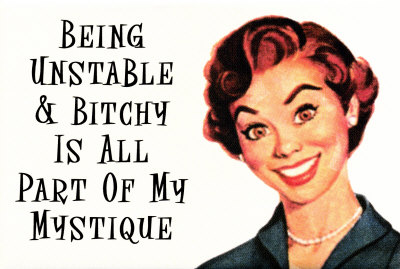
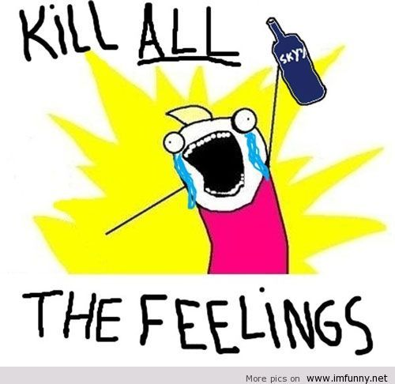
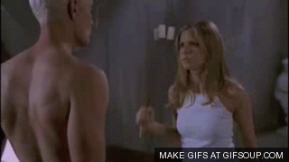
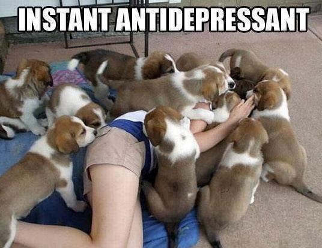

Posted by: Polar Vortex 6 years, 4 months ago
(Comments)
Recently a friend of mine posted an article from Huffington Post by Melanie Curtin titled “10 Easy Ways To Deal With Me When I am Being a Bitch”. It offered tips and suggestion for a potential mate of heterosexual persuasion on how to survive and manage Melanie’s outbursts of non-specified female moodiness and aggression that we commonly refer to as “bitchyness”. Starting with the very title, this article did not sit well with me. Dear Melanie, I realize that this is supposed to be a light-hearted, semi-humorous, insightful look into the female psyche, but c’mon sister, this is not the way. To start with, do you think that maybe, just maybe it’s time to stop perpetuating the stereotypes that women are some sort of irrational creatures devoid of logic and reason who sometimes act in such ways that they need to be “dealt with”?  This mentality is not doing anyone any favors. I get where it is coming from, I really do. Women have been told that they are hormonal and crazy and therefore unfit to make any rational decisions for so long that eventually they started to 1) believe it 2) use it get away with shit. Let’s be honest here, one doesn’t need to have a vagina to be a bitch. I’ve met many people with abundant testicles who act like total bitches and the reason they do it is because they allow themselves to. Lashing out, screaming, getting personal and otherwise acting in a way that we call “bitchy” is something that’s very easy to do. Most humans are capable of it; however, a lot of us choose not to do it. We take steps to stop ourselves at the precise moment when “bitchyness” starts to pour out, we take a deep breath and then... we just don’t. As simple as that, we just don’t. The reasoning behind this act is very simple. The only purpose of being a bitch is to make the people around you miserable. That’s it! If you stop making excuses for why you are acting this way and just ask yourself if there is anything at all that your behavior is aimed to accomplish, you will come to the same realization. Acting like a bitch is done to make the people around you miserable. So if you ever find yourself in a room full of neo-nazis, or pedophiles, or animal abusers, please go ahead and bitch away; however, if you are surrounded by family or friends or perhaps a significant other, maybe you should consider actively not being a bitch. Because when someone loves you, it doesn’t mean that it’s their burden to carry your problems. They don’t OWE you anything. They aren’t SUPPOSED to be there for you. They don’t HAVE to do anything for you. They do it because they choose to. Every Single Time! Just remember this fact. Any time someone does something nice for you, they go out of their way to do it. So maybe, just maybe, YOU could go out of YOUR way and figure out how you can not be a bitch to them. Here are some suggestions:
-
Stop justifying your behavior. Just because you were born with a set of ovaries does not mean that you get to do whatever the fuck you want and claim for it to be ok. It’s the 21st century, sister. You can’t ask for equality and then demand special treatment.
-
Identify the source of the problem. Is something bothering you? Then say it! Find constructive and solution-oriented ways to solve what it is that is making you unhappy. Stop lashing out at unimportant shit because it won’t help you.
-
Eat something.

Hypoglycemia is responsible for 90% of female bad moods around the world. Hanger is real and it will fuck with you. Feed the hanger, but…
-
Don’t feed the inner bitch. The more often you try to keep the “bitch” under wraps, the easier it gets. No, it doesn’t mean swallow all your feelings and emotions.  It means learn to express them constructively - as in with a purpose of accomplishing something other than expressing them. Just like you don’t blurt out every single thought that goes through your head, you don’t have to act out every single feeling that passes through your heart. It’s ok to keep some of them to yourself.
5. Learn accountability. Remember that quote from the movie “As Good As It Gets” when a girl asks Jack Nicholson’s character about how he writes women so well, and he answers “I think of a man but take away reason and accountability”?
This kind of thinking is exactly what we should be trying to move away from as a society, but the only way we are gonna get there is if we (women) take active steps to make this statement untrue. Somehow women to this day are brought up with the notion that it’s OK for them to be flaky, to be moody, to not know what they want, because the world will let them get away with it. Well, I know what I want. I want to not be thought of as flaky, for example. Just remember, your actions can’t be erased with a smile and an “I’m sorry”. So hold yourself responsible for the consequences of your bitchyness.
-
Get some exercise. I know, I know… Everyone knows this one, but so few of us do it. Between endorphins and the general feeling of pride and accomplishment at not being a total couch potato, it’s amazing how much good exercise can do for your mood.
-
Get some alone time. Again, your problems are your problems. Your spouse doesn’t have to be a part of them. If you feel an onset of bitchyness coming on, then perhaps it’s time to tell your spouse that you are going for a run. And then go for a run, and maybe eat something, and sit there by yourself contemplating the root source of your bitchyness until you are calm and not vicious.
-
Get laid. Do I need to mention endorphins again? Also, if you are gonna do anything angry, I would recommend angry sex cause at the very least you’d be getting off. 
Angry masturbation may get a bit weird though, so be careful with that one.
-
Pet a puppy or a kitten. Or a baby? Babies aren’t my thing, but some people seem to really like them, so perhaps it’s your magic solution. Personally, I’d stick with puppies though. I’ve seen pet therapy work wonders. Also, pet owners are a lot less uptight about letting strangers pet their puppies than mothers are about letting strangers pet their babies. 
-
Have fun with it. This one was one of your suggestions, and actually and I like it a lot. Yeah, why not have fun with it? How about setting up a game when every time you act like a bitch, you have to do something funny to make up for it. This way you may end up making a bunch of cash with your awesome “Push It” reenactment video on youtube.
Share on Twitter Share on Facebook
Recent Posts
- Freddy Todd w/ WΦKE & Icculus Boston 9/21
- Together Boston Kicks Off This Sunday 9/23
- Project MUM Somerville Outdoor Party 9/22 FREE
- Learson Peak @ ANNA Wednesday 8/29 (Free Show)
- Space Jesus b2b EPROM this Friday in Brooklyn
Archive
2018
2015
2014
Categories
- Albums (2)
- Allston (1)
- BBP (2)
- Bands (1)
- Blue Boy Productions (4)
- Boston (1)
- Brooklyn (1)
- Cambridge (1)
- Chillout (1)
- DJ Anya (1)
- Drum and Bass (1)
- EPROM (1)
- EarthCry (1)
- Esseks (1)
- Events (6)
- Freddy Todd (1)
- Freddy Todd (1)
- Free Events (2)
- Free downloads (2)
- Glitch Hop (2)
- Glitch Hop (2)
- Grateful Dead (1)
- Huxley Anne (1)
- Icculus (1)
- Jaenga (1)
- Learson Peak (1)
- Live Music (2)
- Live Recording (1)
- Middle East (1)
- Mixes (3)
- New Music (2)
- New York (1)
- Original Tracks (5)
- Outdoors (1)
- Particle (1)
- Remixes (1)
- Schlang (1)
- Shows (7)
- Space Jesus (4)
- Supersillyus (1)
- The Mad Mauritian (2)
- Tiedye Ky (1)
- Trap (1)
- Unreleased Music (1)
- Video (1)
- WΦKE (1)
- desert dwellers (1)
- lespecial (2)
Authors
- Polar Vortex (12)
- Alex Russo (16)
- Alex Russo (6)
Connect
Comments